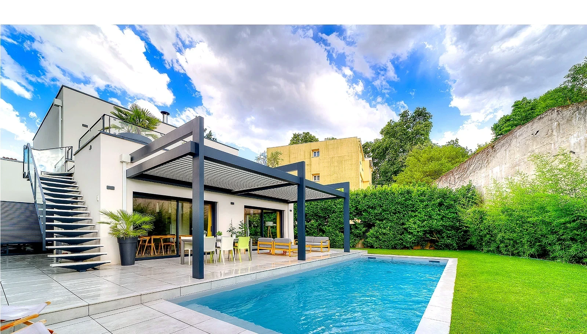
Concepteur et créateur de jardins sur mesure, nous imaginons des extérieurs élégants, durables et pensés pour votre quotidien.
ServicePlus de 200 projets réalisés
en Drôme-Ardèche
Chaque projet naît d’un équilibre entre votre mode de vie, l’architecture de votre maison et le caractère naturel du terrain. Nous imaginons des extérieurs durables, harmonieux et agréables à vivre au quotidien.
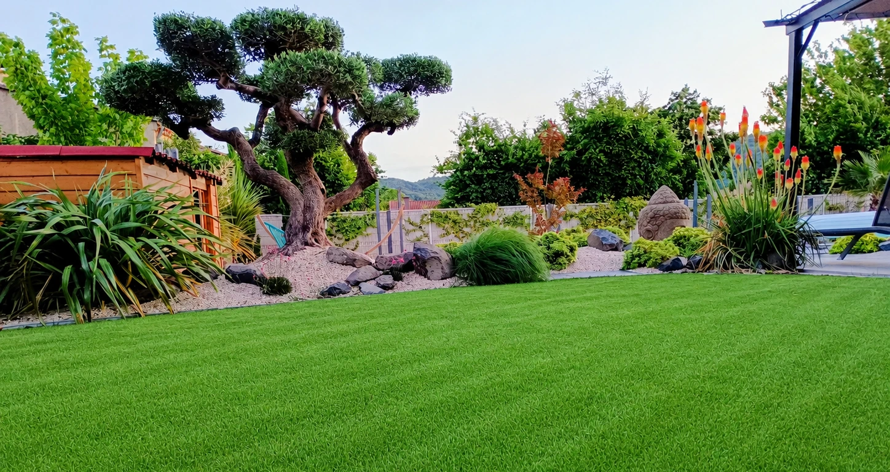
Dans notre showroom à Portes-lès-Valence, comparez et touchez les matériaux, visualisez les finitions et laissez-vous inspirer par nos solutions d'aménagement extérieur.
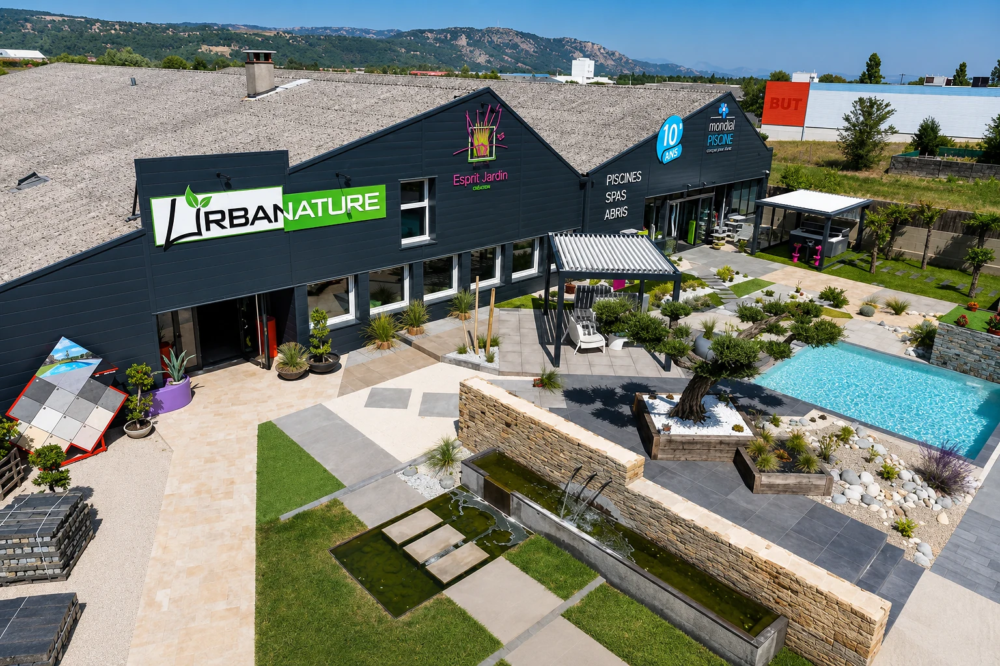
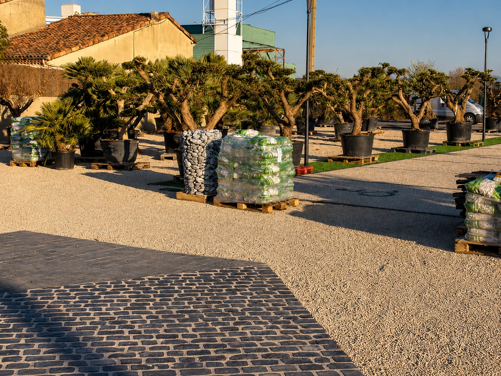
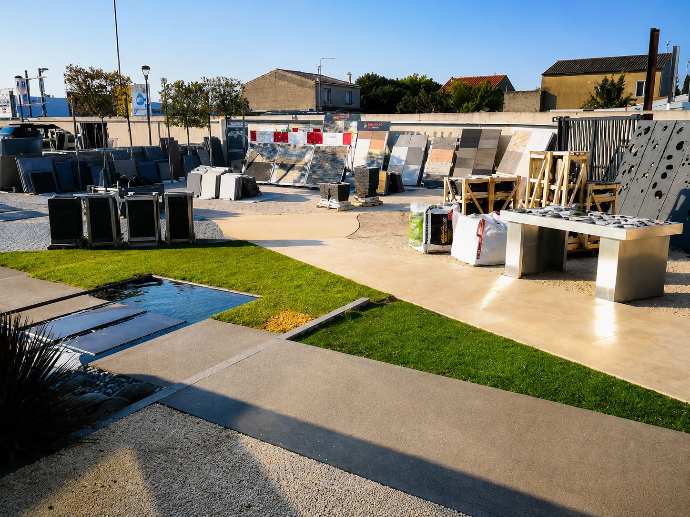
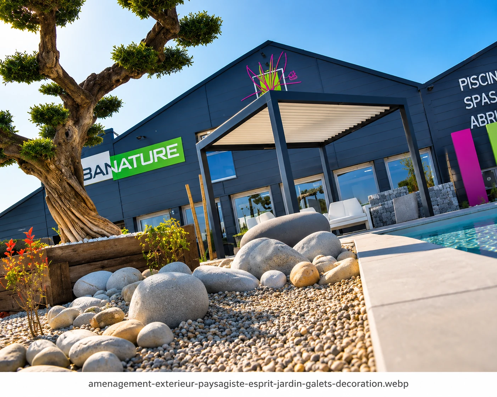
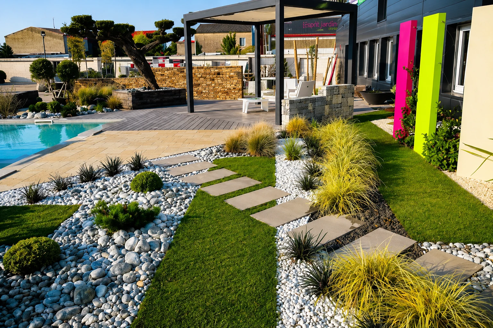
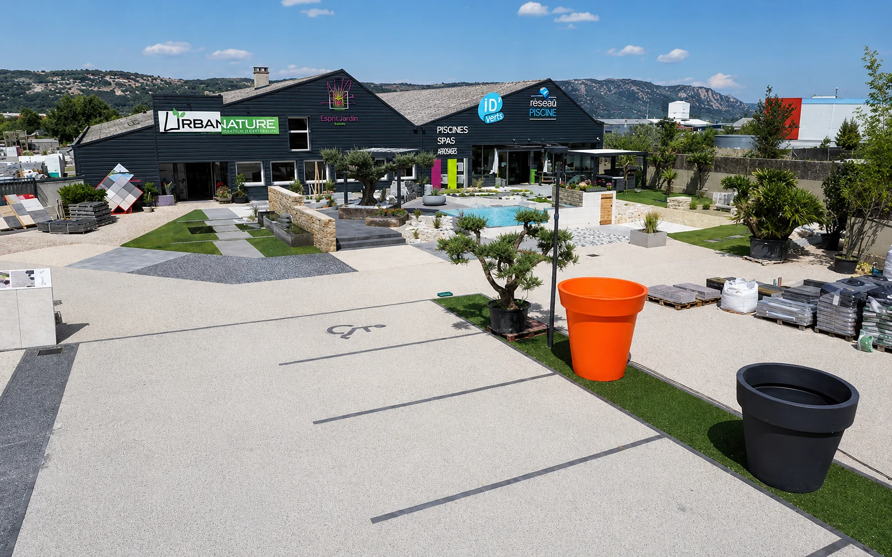
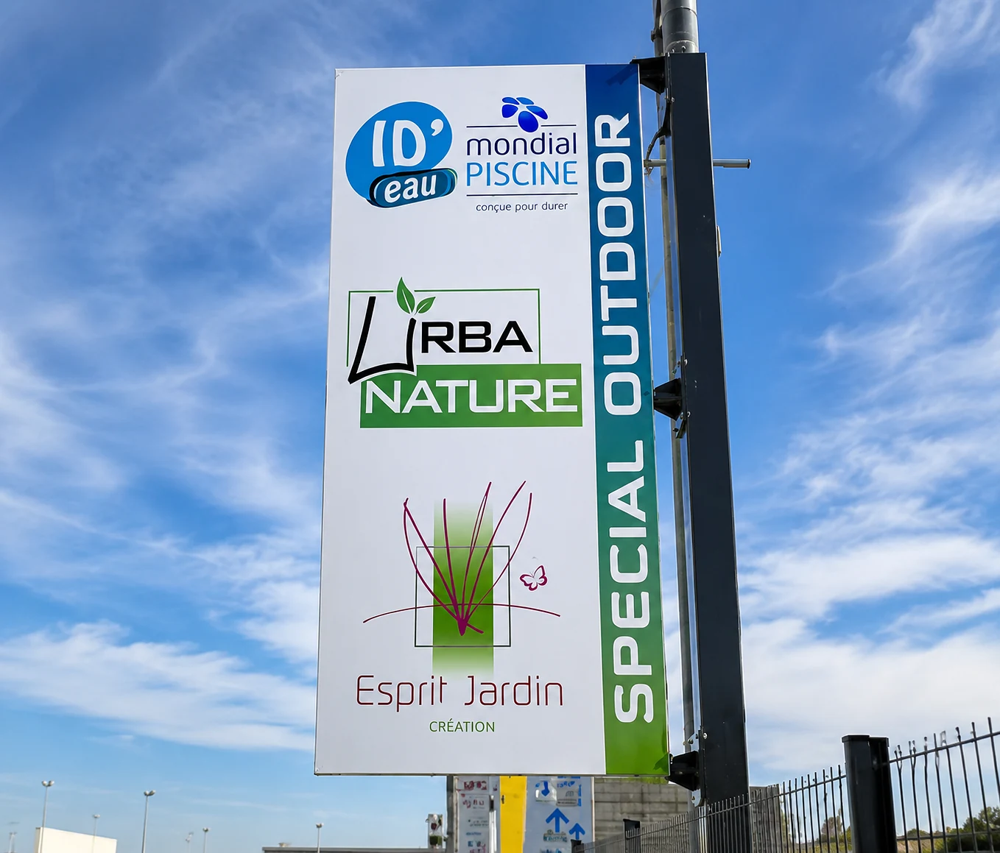
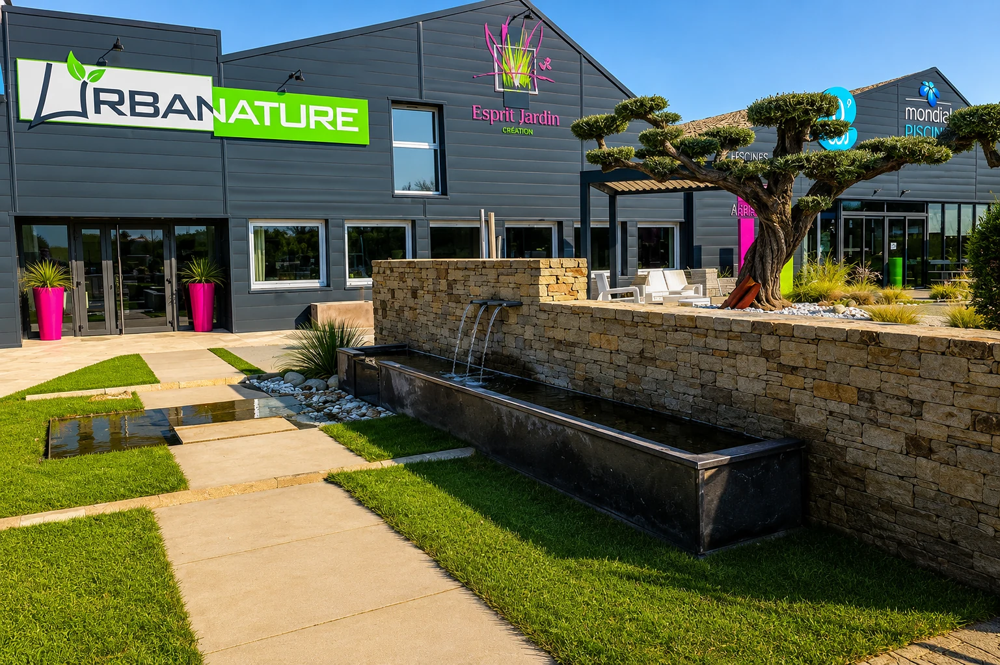
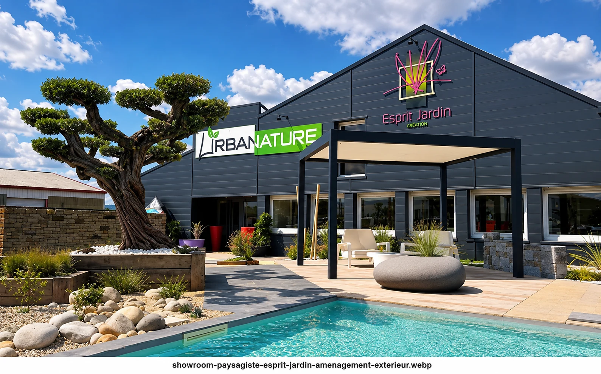
« Équipe professionnelle et à l'écoute. Notre jardin est magnifique, au-delà de nos attentes. »
« Un accompagnement au top du début à la fin. Les matériaux sont de grande qualité et les finitions parfaites. »
« Très contents du résultat, le jardin est devenu notre pièce préférée de la maison. »
Basés à Portes-lès-Valence, nous nous déplaçons autour de Valence et dans tout le secteur pour concevoir et réaliser vos projets paysagers.
Esprit Jardin Création accompagne les particuliers pour la création de jardins, terrasses, abords de piscine, bassins, clôtures et plantations dans la Drôme et l'Ardèche. Chaque projet est étudié selon le terrain, l'exposition, les usages et les matériaux souhaités.